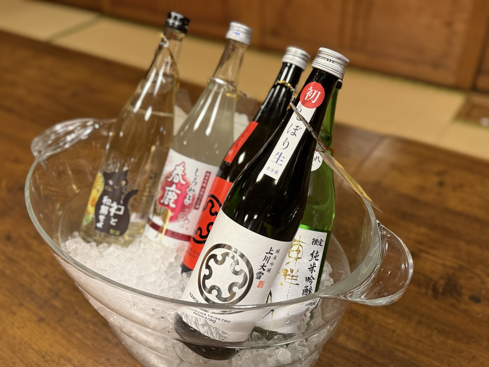

👑 最も人気
上川大雪 しぼり生
平均90.5点。総合人気でいちばん票を集めた一本。
TTC 日本酒の会 / 開催レポート
2026年1月9日（金）、清澄庭園 涼亭。 六本の推しを持ち寄り、飲み比べ、語り合った記録です。
Result
全員のお酒を飲み比べ、感じたことを言葉と点数にしました。順位は価格ではなく、「誰かに飲んでほしいか」で決まります。
上川大雪 しぼり生
平均90.5点。総合人気でいちばん票を集めた一本。
初孫 一徹生酛
温めることで香りと厚みが立つ、燗向きの生酛。
春鹿 しろみき
食事と合わせて、つい盃が進んだ一本。
東陽美人 醇道一途 直汲み
「ストーリーが素敵」。十四代目の唯一の弟子という背景も話題に。
Lineup & Tasting
甘味・香り・深み・酸味・余韻の五軸で、その日に出た六本を採点しました。
| 日本酒 | 甘味 | 香り | 深み | 酸味 | 余韻 |
|---|---|---|---|---|---|
| ネコと和解せよ | 2.0 | 3.8 | 3.0 | 3.3 | 3.5 |
| 上川大雪 吟風 | 4.0 | 2.5 | 1.7 | 2.5 | 1.8 |
| 東陽美人 醇道一途 直汲み | 2.2 | 3.8 | 3.5 | 2.3 | 3.3 |
| 春鹿 しろみき | 2.3 | 3.8 | 3.0 | 3.3 | 3.5 |
| 上川大雪 しぼり生 👑 | 2.8 | 3.8 | 3.0 | 3.3 | 3.5 |
| 初孫 一徹生酛 | 3.2 | 2.0 | 3.0 | 3.5 | 2.5 |
Gallery
※ 写真は仮置きです。第3回の当日写真が届き次第、差し替えます。


その日の推し、点数、語られた言葉。酒は消えても、こうして残しておけば、次の一本を選ぶときの手がかりになります。これも、体験を資産に変える一つの形です。
お酒は20歳になってから。飲酒運転は法律で禁止されています。